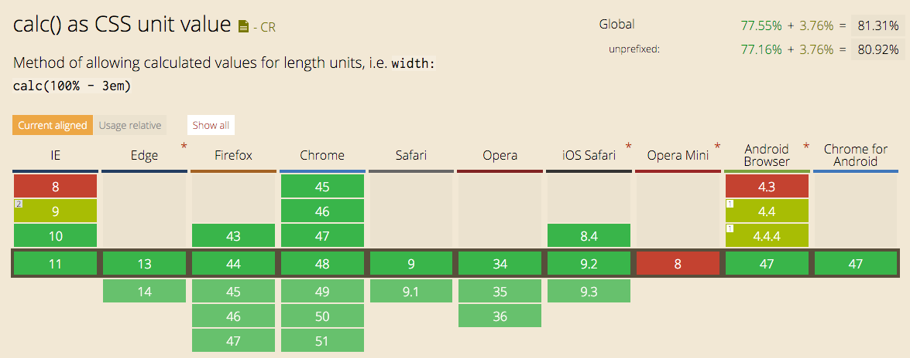

Special thanks to Guru for hosting us!
Wifi: guru-guest
pw: strawberry
Slides: https://tinyurl.com/y7rq7tpq
Practice problems: https://tinyurl.com/ybncb4ly
Intermediate HTML and CSS
Applying your new skills
Welcome!
Girl Develop It is here to provide affordable and accessible programs to learn software through mentorship and hands-on instruction.
Some "rules"
- We are here for you!
- Every question is important
- Help each other
- Have fun
Welcome!
Tell us about yourself.
- Who are you?
- What do you hope to get out of the class?
- What is/was your favorite cartoon (or TV show)?
HTML
Review
Keep it simple!
From a non-technical (and non-linear) point of view...
Either in your own words or using google
define: attribute
Attribute: a quality or feature regarded as a characteristic or inherent part of someone or something (From Google)
Try to do this with all other elements and words you might not know in HTML/CSS
Review: Anatomy of a website
+ HTML (structure)
+ CSS (presentation)
= Your Website
A website is a way to present your content to the world, using HTML and CSS to make it look good.
HTML
Review
- HTML gives structure and content to all websites
- Opening Tag
- Closing Tag
- They act like nesting dolls: last one to open is the first one to close
- There are some elements that are their own closing tag. We call these elements 'self-closing'. ex. <img/>
HTML
Review
- Each tag can have any number of attributes:
- Classes, ids, language, source, style, reference, data, etc.
HTML
Review
- Document Object Model (DOM)
- Element Family tree:
- Parents
- Children
- Siblings
- Ancestors
- Descendents

CSS
Review
CSS is like the skin! It makes the website look beautiful and not like a creepy skeleton running around.
- CSS breakdown:

CSS
Review
-
Three different ways to include CSS
- Inline
<p style="color: red; font-size: 20px; font-style: italic;"> This has inline styles </p> - Internal (Embedded)
<style> p { color: red; font-size: 20px; font-style: italic; } </style>You put this in the head of your document!
- External
p { color: red; font-size: 20px; font-style: italic; }
- Inline
CSS
Review
In the beginning...
CSS didn't always exist!
Layout was initially a table and styles were added as attributes (sometimes there were even style HTML tags, such as for font!)
It's ok though! We got CSS in the end!
Semantic HTML
In order for the internet to be accessible to anyone and everyone, your elements should be as meaningful as possible.
Poor example:
<p>Welcome!</p>
<h2>
This is a lot of text and probably was not a
good idea to use a header for this.
</h2>Welcome!
This is a lot of text and probably was not a good idea to use a header for this.
Semantic HTML
- If you need to write a bunch of text a <p> tag is appropriate
- For the same reason, something important and short should use header tags (h1, h2, h3, etc.)
Don't style your <p> tags to look like <h1> tags!!
- In order for your page to be valid, you can only use one (1) <h1> tag.
- Tables are actually useful! They are for tabular data!
You wouldn't use a spreadsheet for your resume, so don't use a table for page layout.
HTML
When you write HTML, you need to check that you are writing the correct and allowed elements within other elements.
For example: you cannot place a <div> inside of a <p>
<p>
<div></div>
</p>You can look up specific elements and their permitted content on the w3.org site.
List of ElementsResponsive Web
Difference between Responsive Design and Adaptive Design
HTML is already responsive!!!
Sometimes that's not enough...
Responsive Web
We can use CSS to assist in making our pages remain responsive.
- Percentage widths
- Also percentage margins/padding
- You can also use calc() 
Responsive Web
Percentage Margins!
Fun fact about using percentage margins and padding:
The actual margin/padding is determined/calculated by the width of the CONTAINER.
Feel free to use percentage left/right margin/padding on your elements, they will look significantly better than using it on top/bottom.
Responsive Web
MOAR CSS!
- min- and max-width
Use percentage widths and min/max-width in combination for some c R a Z y stuff
img {
width: 50%; /* Images will be 50% of their container */
max-width: 250px; /* Until the image hits 250px
then it will remain at 250px */
min-width: 100px; /* If the image starts to shrink
and suddenly 50% is not legible,
or doesn't look good,
this is as small as it will get */
}Let's develop it!
Starting out
- Open the practice exercises folder in your text editor and index.html in your browser
- Make sure elements are being used semantically
- Use a percentage width on the images in the gallery and the bottom
- Add a percentage padding on the images in the gallery.
Bonus!
- Apply a max width on the inner content but leave the header and footer at full bleed (they continue to touch the edge of the page).
- When checking the page size on a mobile screen, try to figure out why the text content is covering the footer text.
CSS
Heights
- Rule of thumb: don't set a height on any elements, because most of the time the content will set the height for you. Unless your intention is to have a set height, then remember to use 'overflow' with height
- Percentages and heights don't mix
If you want to use a height, for something like a giant hero image, in that case you can use 'vh'!
vh is viewport height
For the image to take up the whole viewport size set height to 100vh
CSS
Fonts
Fonts can be "responsive," too!
We can use font size known as ems.
What is an em?
It is a measure of font size originally determined by the width of the letter 'M'
You can set a base font on the body of your document such as 16px. And then you don't have to touch pixels again. You can use ems based off of that base font size.
We all can't do the math in our heads to figure out what ems we want so here's a handy link!
CSS
Fonts
Example
body {
font-size: 30px; /* This is our base font */
}
div {
font-size: 0.75em; /* All divs will have 22px font */
}
h1 {
font-size: 1.167em; /* All h1s will have 35px font */
}CSS
Fonts
Uh oh! We have a problem!
<body>
This is the base font size.
<div class="container">
This is ok and no problem.
<div class="main">
This is where our problem lies.
<div class="main">
It only gets worse from here.
</div>
</div>
</div>
</body>body {
font-size: 30px;
}
div {
font-size: 0.75em; /* All divs will have 22px font */
}
CSS
Fonts
There are solutions!
body {
font-size: 30px; /* This is our base font */
}
div {
font-size: 0.75em; /* All divs will have 22px font */
}
div div {
font-size: 1em; /* Sets any divs within divs to have font equal to the last time font-size was defined */
}CSS
Fonts
There are solutions! (continued)
REM!
No... not the band REM
html {
font-size: 30px; /* This is our base font */
}
div {
font-size: 0.75rem; /* All divs will have 22px font */
}Box Model
Margin
Border
Padding
Content
Box Model
If we are trying to make pixel perfect responsive designs, percentage widths and padding can mess us up
How do we fix this in order to match our pixel perfect designs?
.selector {
box-sizing: border-box;
}The box will recalculate itself if there is padding and border to remain the same width and height.
Codepen exampleLet's develop it!
Adjust the bottom text so it doesn’t cover the footer (remove the height constraint, add an overflow)
Set the fonts
- Set the base font to be whatever size you want. Using the px-to-em calculator, set the font sizes for the general 'h1', 'h2', 'h3'... etc. as well as 'p' tags and any other text tags
- Try to apply rems!
- Free free remove any added css font-sizes on the elements to be able to see your changes.
Bonus!
- Use box sizing on all of the elements on the page and see how everything (if anything) changes.
Directory Structure
Organizing your files
When you have a small site (e.g. a landing page, a CSS file, and maybe a js file, and some images), this isn't as big of a deal
BUT!
If you are consistent and do this no matter how small the site is, your sites will be easier to develop and you will have an easier time working on teams.
Directory Structure
Examples
Basic
↳ /your_main_folder ↳ /images — me.jpg ↳ /javascripts — myjs.js ↳ /stylesheets — mystyles.css — index.html
More Advanced
↳ /your_main_folder ↳ /assets ↳ /fonts — icons.woff ↳ /images — me.jpg — logo.svg ↳ /javascripts — jquery.min.js — my_js.js ↳ /stylesheets — my_styles.css ↳ /views ↳ /any_individual_folders — index.html
CSS Organization
- Organize elements from least specific to most
-
Elements come first
body {} div {} ul {} p {} a {} -
Then do any classes (in the order that they appear in your document)
.header {} .nav {} .container {} .content {} .footer {} -
Finally extremely specific styles
#facebook-icon {} #copyright {}
-
Elements come first
Organizing your CSS
Specificity
The more selectors we add onto our css selectors will make the stylesheet slower.
Fun fact, the browser reads CSS selectors from right to left.
So the less specific we are on the right (at the end of our selectors) the slower the browser is.
#footer .class adiv .class #linkCSS Organization
One methodology for organizing CSS and naming classes is to use something called BEM
Block, Element, Modifier
- Block level elements - essentially like your container
- Elements - the individual elements within your block/container
- Modifier - sometimes you don't want your elements to look the same every time, and they might change depending
More on BEM
.puppy {}.puppy__eyes {}
.puppy__ears {}
.puppy__fur {}
.puppy__tail {}
.puppy__nose {}.puppy__eyes--left {}
.puppy__eyes--right {}CSS Organization
Another method is making individual class names for each style you want to apply.
The problem with this is that your HTML will become bulky and will be no different than just adding a style attribute on each individual HTML element
There is a set of “rules” (which are more like strong suggestions) that should be followed when writing CSS
CSS
Try not to use IDs for styling.
Typically IDs are used for JS hooks.
Also they are super specific and can't be reused in the future if you want to have similar styles somewhere else.
IDs can only be overridden with other IDs or more extreme methods such as inline styling or through the use of !important
Let's Develop It!
Organize the files into individual directories.
Organize the CSS in an order that makes sense.
Try to rename some of the classes following BEM practices!
Bonus: Let's also remove some of the ID's used for styling (don't be afraid to add new classes to help!)
CSS Selectors
Let's take a look at the CSS selectors we might already be familiar with:
- Element selectors: div, p, ul, li, a, etc.
- Classes: .list, .paragraph, .icon
- IDs: #footer, #footer
- Child Selectors: a .icon will select any .icon within a tags
- Link pseudo selectors: a:link, a:visited, a:hover, a:active
But CSS is magical and we can select way more stuff and be more specific without resorting to IDs!
CSS Selectors
div > .pretty {}<div>
<span class="pretty">
This has the styles!
<span class="pretty">
But this doesn't!
</span>
</span>
</div>div + .pretty {}<div></div>
<p class="pretty">
This has the styles!
</p>
<div class="pretty">
But this doesn't!
</div>div ~ .pretty {}<div class="pretty">
This doesn't have the styles!
</div>
<p class="pretty">
This has the styles!
</p>
<p class="pretty">
And so does this!
</p>But wait! There's more!
Every element has this hidden space "before" and "after" it.
It can be manipulated a lot like regular elements!
Let's Develop It!
Select only every p tag that is a direct sibling of another p tag
Make those paragraphs have a blue background.
Other paragraphs should continue to have a their current background color.
Try selecting another tag on the page indirectly using this method (i.e. anchor tag that is a direct descendent of a list item). Add some of your favorite styles.
Bonus: there is a div with the class "building-something-cool-with-this-div" try using :before and :after to style it. Remember, if you want to see changes before and after need to have "content"
Now a break from our regularly scheduled programming
CSS Preprocessors
Several ones you can use or learn about
Sass CSS
$red: #cf202d
$almost-white: #f1f2f2
$base-font-size: 10px
body
font-size: $base-font-size
background: $almost-white
p
color: $almost-white
font-size: 1.6em
background: $red
.my-class
color: $red
body {
font-size: 10px;
background: #f1f2f2;
}
body p {
color: #f1f2f2;
font-size: 1.6em; /* This is 16px */
background: #cf202d;
}
.my-class {
color: #cf202d;
}CSS preprocessors
SCSS CSS
$red: #cf202d;
$almost-white: #f1f2f2;
$base-font-size: 10px;
body {
font-size: $base-font-size;
background: $almost-white;
p {
color: $almost-white;
font-size: 1.6em;
background: $red;
}
}
.my-class {
color: $red;
}
body {
font-size: 10px;
background: #f1f2f2;
}
body p {
color: #f1f2f2;
font-size: 1.6em; /* This is 16px */
background: #cf202d;
}
.my-class {
color: #cf202d;
}CSS preprocessors
LESS CSS
@red: #cf202d;
@almost-white: #f1f2f2;
@base-font-size: 10px;
body {
font-size: @base-font-size;
background: @almost-white;
p {
color: @almost-white;
font-size: 1.6em;
background: @red;
}
}
.my-class {
color: @red;
}
body {
font-size: 10px;
background: #f1f2f2;
}
body p {
color: #f1f2f2;
font-size: 1.6em; /* This is 16px */
background: #cf202d;
}
.my-class {
color: #cf202d;
}CSS Preprocessors
For smaller projects it doesn't make sense to have this set up.
But in larger projects or projects worked on by several people or teams this is extremely helpful.
CSS prepropcessors allow us to write DRY code through the use of mixins which are sort of like functions.
Check out sass-lang for more info on Sass and SCSS and lesscss.org for more on LESS.
Now back to our regularly scheduled programming!
Document Flow
The DOM will render in a specific order (top to bottom) and each element will have its own place in the document flow
But you can take things out of where they belong
You can acheive this by using different types of positioning!

Positioning
A few ways to take elements out of their normal document flow
Position: fixed/absolute, floats
Positioning
- Static - the default behavior, wherever the element is, that’s where it is
- Relative - keeps the element in its normal flow, but allows you to move it around (without affecting any other elements on the page), creates a new context
- Absolute - takes the element out of its normal flow, relative to its closest parent context, creates a new context
- Fixed - positions the element relative to the window, keeps it in that spot forever, takes it out of the normal flow, creates a new context
- Shhhh!!! This one isn't really supported but there is also sticky.
Positioning
When you take an element out of the flow, you can’t force it out of the flow again
setting an element to position: absolute/fixed will always trump float, you can put it in your css, but float will not work, no matter the order that you put your styles in (float first position second and vice versa)
Stacking Context
z-index!
Like in real life, a document can have 3 dimensions!
Think of the document being a binder and there being a stack of papers inside (these are your elements)
z-index will only work with elements that have their own context (position: relative/absolute/fixed)
Display
-
Block: most elements are set to this; div, p
this means that no matter how wide, they will clear each other and stack on top of one another
-
Inline-block: this will allow elements to stack up next to one another, as long as there is room, keeps height/width, padding/margin constraints
-
Inline: the element will only take up as much space as it needs, on spans, any styling elements (em, strong)
will ignore any top/bottom margin you add, will add top/bottom padding, but not move other elements out of the way, will also ignore width and height settings
Display (continued)
-
Table: the elements behave like a table, used with display: table-cell/table-row and so on
-
None: will hide the element and remove it from affecting the document flow
Not the best rendering solution, you probably shouldn’t put the element in there if you don’t want it to show, usually used in conjunction with js, elements will still load (like images)
Display (continued)
-
Flex: used on parent element to align the internal elements wherever you need them to be
-
Grid: also used on a parent element to position inner elements similarly to table. But allows for more granular positioning
Centering Elements on your page!
div { margin: 0 auto; }Only works on elements that have a display: block and you can only really see a change when there is a width set.
But if you have an element (or elements) using display: inline/inline-block you can center them by setting text-align: center on their parent element
Centering (continued)
Maybe you want to center something that is position: absolute/fixed
div {
position: absolute;
left: 0;
right: 0;
margin: 0 auto;
}!IMPORTANT
This is really !important for you to remember:
Avoid using !important in your CSS
Sure, sometimes you can use it, but it overrides any other styles, and if you are trying to override styles and struggling with it, then you need to rethink your styling and not resort to !important
There are times when you might need to use it:
Some jobs might need it
Let's develop it!
Remove the use of any important tags! We REALLY don't need them.
Using position absolute/relative, position the text underneath the last image, over the image. (Adding any containers or elements needed.)
Center the main heading (that say's welcome to my page).
Bonus: Look up Css Grid and try to implement it on the gallery of images!
DEBUGGING!
Live in the inspector!
Every browser renders HTML elements differently
We use CSS to try to unify how things look across all the different browsers
Sometimes browsers won’t accept certain styles without the use of browser specific prefixes
-webkit-, -ms-, -moz-, -o-
But also make sure you also include the code without the prefix at the end!
Debugging
Inspectors in various browsers are pretty robust!
Debugging in Browsers
Can’t access a certain browser or want to see how your code will look on a specific browser on a phone?
Browserstack (free 30min trial)
Microsoft Edge This takes a screen shot of your site on Edge
Codepen allows free crossbrowser testing of your code snippets
xcode can allow you to emulate iphones/ipads
Chrome has some robust mobile emulators
Commenting
Not just for taking notes!
Sometimes things just won’t work no matter what you do. Maybe you are absolutely sure you wrote your markup or styles absolutely perfectly, spelled everything right and it’s still just not working, commenting out chunks of code and checking where it still works is the best way to debug something not working.
Speaking of comments!
Developers love comments! (But don't go overboard)
Comments help others understand your code if you do something a little out of the ordinary
Comments help you remember why you did something out of the ordinary
Debugging
Sometimes commenting doesn't work because it's not necessarily that something is broken. But maybe adding random styles can help
div { outline: 10px solid green; } Outlines will show you the space which an item takes up, but doesn't move it like a border would!
Another break from out regularly scheduled program
Codepen
codepen.io allows you to create snippets of html/css/js and loads the result in a window immediately. It’s a really good place for testing out pieces of code, looking at other people’s fancy code and allows for cross browser testing of your code.
There are other similar sites, but personally, I really like codepen
Now back to our normal schedule
Linting
What is a linter?
A linter checks our code and lets us know of any bad coding practices
It will set some rules for your editor to follow and your editor can be set to autimatically fix those bad coding practices or to warn you that you did something bad.
There are some "rules" that are suggested that you can follow, but this is really just an opinion:
And if you don't know any Korean (I don't)
Most editors have plugins for these rules to make it easier for you!
Clean Code
White space isn't read by the browser. So make good use of it!
Use indentation!
add a space between a CSS selector and the opening of the rule block ( .some-class {} ) (the blue highlighted part)
Code Validators
Code validators will check your code if it is written correctly:
- check for missing closing tags
- tags written in the wrong order
- missing semi-colons
- missing alt tags on images
Moar debugging!
Can't figure out a problem using any of these tips?
ASK REAL PEOPLE!
GDI has a Slack group! Ask in the #css-help channel
We also offer awesome Code & Coffee meetups once a month where you can ask real people real questions!
Also, please feel free to bug me at any time of day (morning, evening, 3am). I might not respond at 3am, but I will definitely respond within 24 hours.